Edició 2026 · 10–13 setembre
Campionat Frontenis
Els Tarongers
Tot el campionat en un únic lloc. Consulta quan jugues, segueix els resultats, reserva els àpats i rep els avisos de l’organització.

Format
32
Dates
10–13
Dinars
0
Avisos
0
El més important
Segueix el campionat
Participa
Apunta-t'hi
Comunitat
Els Tarongers
Amb el suport de